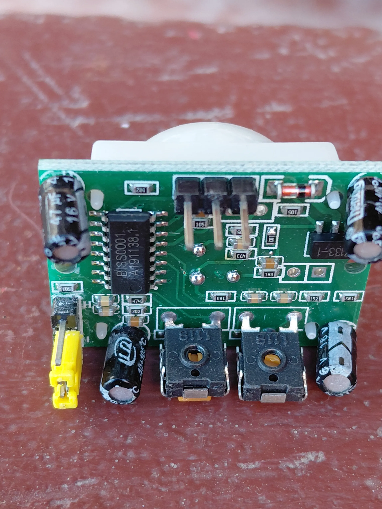
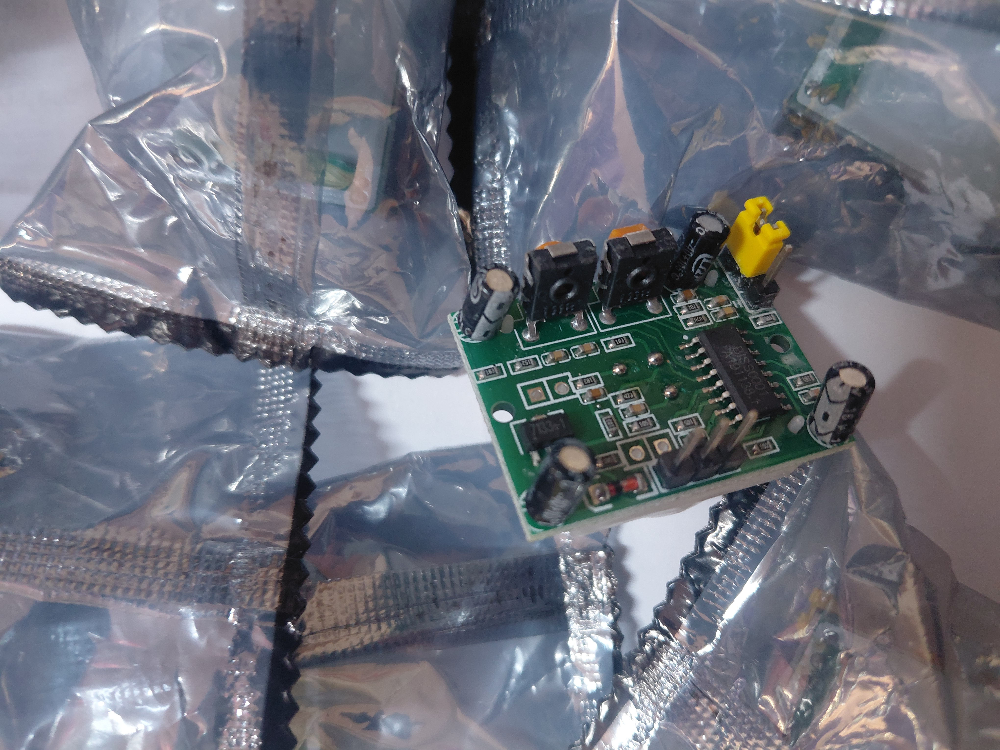
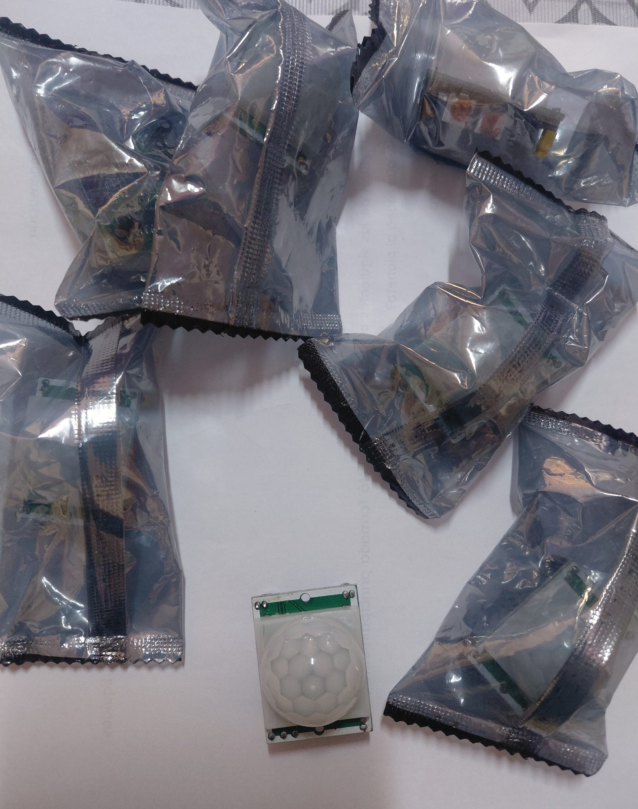

The three things that cause most HC-SR501 problems
1. The warm-up period. The module needs roughly 30 to 60 seconds after power-on to stabilise. Triggers during that window are meaningless. Most "my sensor is broken" reports are this.
2. The jumper. H and L select completely different output behaviours. If your output drops LOW while someone is still moving, you are in L mode and probably did not intend to be.
3. The 3.3V output. The module outputs about 3.3V, not 5V. A 5V Arduino accepts it, but with only around 0.3V of margin — which is why long wires and noisy supplies cause intermittent failures that look like sensor faults.
What this guide covers
- How a PIR sensor actually detects motion
- Board tour: what each component does
- The two trimpots: sensitivity and time delay
- The H/L jumper: repeatable vs single trigger
- Wiring to an Arduino
- The 3.3V output and 5V logic thresholds
- Working code with state tracking
- Diagnosing false triggers
- What this sensor fundamentally cannot do
- Frequently asked questions
How a PIR sensor actually detects motion
"PIR" stands for passive infrared. Passive is the important word: unlike an ultrasonic sensor, which emits a pulse and listens for the echo, a PIR sensor emits nothing at all. It only listens.
Every object above absolute zero radiates infrared energy, and a human body radiates strongly in the range this sensor is tuned to. Underneath the white dome sit two (sometimes four) pyroelectric elements wired in opposition. When both elements see the same amount of infrared, their signals cancel and the output is zero. When something warm moves across the field of view, it crosses one element before the other, the balance breaks, and the difference produces a measurable signal.
That differential arrangement is a deliberate design choice, and it explains the sensor's single most misunderstood behaviour: it detects change, not presence. Ambient room temperature rising slowly affects both elements equally and produces nothing. A person walking across the beam produces a strong signal. A person standing perfectly still produces nothing after a second or two, and the output drops back to LOW.
What the white dome is for
The dome is a Fresnel lens, and it is not decorative. Look closely at the moulded facets — each one focuses infrared from a different narrow slice of the room onto the sensing elements. This slices the detection area into a fan of alternating sensitive and blind zones.
The result is that a warm body crossing the field passes through zone, gap, zone, gap, producing a sharp alternating signal that is easy to distinguish from a slow ambient drift. Without the lens, the sensor would have a single wide undifferentiated view and would be far worse at telling motion apart from background change. It is also why walking across the sensor triggers it much more reliably than walking directly towards it — moving straight at the sensor crosses far fewer zone boundaries.
Board tour: what each component does


The board is built around the BISS0001, a dedicated PIR controller chip that handles the entire analogue signal chain. The raw output from a pyroelectric element is tiny and noisy, so the BISS0001 provides a two-stage amplifier, a comparator with a fixed threshold, and the retriggerable timing logic that holds the output HIGH for the configured delay. The chip in the photo above is marked BISS0001 with a date code below it.

Everything else on the board supports that chip. The onboard voltage regulator lets the module accept a wide supply range and feed the BISS0001 a clean rail. The electrolytic capacitors decouple that rail — PIR front-end gain is high enough that supply ripple would otherwise show up as false detections. The three-pin header carries VCC, OUT and GND.
| Feature | Typical value | Why it matters |
|---|---|---|
| Controller IC | BISS0001 | Handles amplification, thresholding and retrigger timing on-chip |
| Supply voltage | Roughly 4.5 V to 20 V | Runs directly from Arduino 5V, or from a 9 V or 12 V rail |
| Output voltage | About 3.3 V HIGH, 0 V LOW | Not 5 V — see the logic level section |
| Detection range | Roughly 3 m to 7 m, adjustable | Set by the sensitivity trimpot |
| Detection angle | Roughly 100° to 120° cone | Wide, but blind directly behind and to the sides |
| Output delay | Under a second up to several minutes | Set by the time-delay trimpot |
| Warm-up time | Roughly 30 to 60 seconds | Output during this window is unreliable |
| Blocking interval | Roughly 2.5 s after output drops | Sensor ignores motion briefly before it can retrigger |
Specifications vary between clones. The HC-SR501 is an unbranded design manufactured by many factories, and the figures above are typical rather than guaranteed. Supply range, output voltage and trimpot travel all differ slightly between production runs. Treat the numbers as a starting point and verify the behaviour of the specific modules you have — which is exactly what the test sketch further down is for.
The two trimpots: sensitivity and time delay
The two black adjusters are the module's only tuning controls, and getting them right is most of the work.
Sensitivity
Sets the comparator threshold, which effectively controls detection range — roughly 3 metres at minimum, roughly 7 metres at maximum. Turning it up does not just extend range; it also makes the module more willing to act on weaker signals, which means more false triggers from heat sources at the edge of the field.
The practical approach is to start at minimum, then increase until the sensor reliably catches motion at the distance you actually care about, and stop there. Resist the urge to max it out — a sensor covering a 3-metre doorway set to 7-metre sensitivity will pick up movement through the doorway from the next room.
Time delay
Sets how long the output stays HIGH after a detection, from well under a second at minimum to several minutes at maximum. This is done in hardware by the BISS0001, not in your code — the pin genuinely stays HIGH for that whole period regardless of what your sketch does.
For testing and for reading the sensor in software, set this to minimum. A long hardware delay makes debugging miserable, because every test requires waiting out the timer before the sensor will respond again. If your application needs a light to stay on for two minutes, it is almost always better to keep the hardware delay short and handle the timing in your sketch, where you can change it without a screwdriver.
Which trimpot is which varies by batch. There is no reliable universal rule — position, orientation and even which direction counts as "increase" differ between manufacturing runs of this module. Identify them empirically: set the time delay knob you suspect to minimum, then turn the other and watch how detection distance changes. Two minutes of testing beats guessing from a diagram that was drawn for a different factory's board.
The H/L jumper: repeatable vs single trigger
The small yellow jumper — visible at the left edge of the component-side photo above — selects between two genuinely different output behaviours. This is the setting that most tutorials skip, and it causes a disproportionate share of confusion.
| H — repeatable (retriggerable) | L — non-repeatable (single trigger) | |
|---|---|---|
| On detection | Output goes HIGH | Output goes HIGH |
| If motion continues | Timer restarts continuously — output stays HIGH | Timer runs out — output drops LOW even with motion present |
| Output pattern with a person in the room | One continuous HIGH | Repeating HIGH / LOW pulses |
| Good for | Occupancy lighting, "someone is here" logic, most projects | Counting discrete events, triggering a single action per detection |
In H mode, every new detection resets the delay timer. Someone walking around the room keeps the output HIGH continuously and it only drops once the room has been still for the full delay period. This is what you want for a light that should stay on while a room is occupied.
In L mode, the timer is not restarted by further motion. The output goes HIGH, runs its delay, and drops — then a blocking interval passes, and only then can it trigger again. With continuous motion the output pulses on and off. This is occasionally useful if you want one discrete event per detection cycle, but it is rarely what a beginner intends.
If your symptom is "the light keeps turning off while I am standing right in front of it", check this jumper before anything else.
Wiring to an Arduino
Three wires, and the pin order is printed on the board underneath the header — worth checking, because it is not identical across all clones.
| HC-SR501 pin | Arduino | Note |
|---|---|---|
| VCC | 5V | The onboard regulator handles it; the module also runs from 9 V or 12 V if needed |
| OUT | Digital pin 2 | Digital input, no pull-up needed — the module drives both HIGH and LOW actively |
| GND | GND | Common ground with the Arduino is essential |
| LED (optional) | Digital pin 13 + 220 Ω to GND | Pin 13 also drives the onboard LED, so an external one is optional |
Pin 2 is a deliberate choice: on an Arduino Uno it is one of the two external interrupt pins. This sketch polls the pin rather than using an interrupt, but wiring it to pin 2 from the start means you can move to attachInterrupt() later without rewiring — useful once the sketch grows and polling every loop stops being practical.
Unlike a button, the OUT pin does not need INPUT_PULLUP. The module actively drives the line to about 3.3 V for HIGH and to ground for LOW, so a plain pinMode(pin, INPUT) is correct. Adding a pull-up would fight the module's LOW drive.
The 3.3V output and 5V logic thresholds
This deserves its own section because it is the source of the most frustrating class of HC-SR501 failure: the one that works on the bench and fails intermittently in the finished project.
The module's OUT pin goes to roughly 3.3 V when triggered, not 5 V. On a 5 V AVR Arduino, a digital input is guaranteed to read HIGH above about 0.6 × VCC, which is 3.0 V. So 3.3 V is read as HIGH — with roughly 0.3 V of margin.
That margin is enough on a short jumper wire with a clean supply. It erodes quickly when you add a two-metre signal run, share a supply with motors, or run the Arduino from a slightly high regulator that pushes VCC above 5 V — which raises the threshold and shrinks the margin further. The failure mode is not a dead sensor; it is a sensor that works most of the time and occasionally misses a detection, which is far harder to diagnose.
| Board | Logic level | Margin on a 3.3 V HIGH | Verdict |
|---|---|---|---|
| Arduino Uno / Mega / Nano | 5 V | About 0.3 V | Works; keep wiring short and the supply clean |
| ESP32 / ESP8266 | 3.3 V | Full margin | Ideal match |
| Arduino Due / Zero | 3.3 V | Full margin | Ideal match |
If you need real margin on a 5 V board, the clean fix is a small NPN transistor or a logic-level MOSFET as a level translator, or simply moving the sensor to a 3.3 V microcontroller. For a classroom exercise on a 30 cm jumper wire, direct connection is fine — just know why it is fine, so that when the same circuit misbehaves inside a two-metre enclosure you already know where to look.
Working code with state tracking
The naive sketch — digitalRead() and print — floods the Serial Monitor with hundreds of identical lines per second and tells you nothing about when things changed. This version tracks state transitions and reports only the edges, which is what you actually want when tuning the trimpots.
// HC-SR501 PIR motion sensor - edge-detecting test sketch
// OUT -> pin 2, LED -> pin 13
// Set the time-delay trimpot to MINIMUM while testing.
const int PIR_PIN = 2;
const int LED_PIN = 13;
const unsigned long WARMUP_MS = 60000UL; // 60 s stabilisation
int lastState = LOW;
unsigned long motionStartedAt = 0;
void setup() {
Serial.begin(9600);
pinMode(PIR_PIN, INPUT); // module drives both levels; no pull-up
pinMode(LED_PIN, OUTPUT);
digitalWrite(LED_PIN, LOW);
Serial.println(F("HC-SR501 warming up - ignore output for 60 s"));
unsigned long start = millis();
while (millis() - start < WARMUP_MS) {
// blink slowly so it is obvious the board is alive, not frozen
digitalWrite(LED_PIN, (millis() / 500) % 2);
delay(10);
}
digitalWrite(LED_PIN, LOW);
lastState = digitalRead(PIR_PIN); // adopt whatever state it settled into
Serial.println(F("Ready. Watching for motion."));
}
void loop() {
int state = digitalRead(PIR_PIN);
if (state == HIGH && lastState == LOW) {
motionStartedAt = millis();
digitalWrite(LED_PIN, HIGH);
Serial.print(F("MOTION START at "));
Serial.print(millis() / 1000.0, 1);
Serial.println(F(" s"));
}
else if (state == LOW && lastState == HIGH) {
unsigned long heldMs = millis() - motionStartedAt;
digitalWrite(LED_PIN, LOW);
Serial.print(F("MOTION END held HIGH for "));
Serial.print(heldMs / 1000.0, 1);
Serial.println(F(" s"));
}
lastState = state;
}Three things make this sketch more useful than the usual example:
- It enforces the warm-up rather than leaving it as a comment, and blinks the LED during it so the board does not look dead.
- It reports only transitions, so the Serial Monitor stays readable and you can see exactly when each detection began and ended.
- It measures how long the output stayed HIGH, which is the direct way to calibrate the time-delay trimpot. Turn the knob, trigger the sensor, read the number.
Typical output once running:
Ready. Watching for motion.
MOTION START at 61.4 s
MOTION END held HIGH for 2.8 s
MOTION START at 70.2 s
MOTION END held HIGH for 2.8 s
That repeated "held HIGH for 2.8 s" is the time-delay trimpot at its minimum setting on this particular module. Turn the knob clockwise and the number grows. If it never drops back to LOW while you keep moving, you are in H mode — which, as covered above, is usually the correct mode.
Diagnosing false triggers
Work down this list in order. The causes are roughly ordered by how often they turn out to be the answer.
| Symptom | Likely cause | Fix |
|---|---|---|
| Random triggers in the first minute after power-on | Warm-up period not respected | Ignore all output for 60 s — the sketch above does this for you |
| Triggers when motors or relays switch | Supply dips coupling into the high-gain front end | Add a 100 µF electrolytic plus a 100 nF ceramic across the module's VCC and GND, close to the module |
| Triggers at the same time each day | Sunlight moving across the field of view | Reposition, or shade the lens from direct sun |
| Triggers near a window, door or vent | Moving air at a different temperature | Move the sensor away from vents and draughts; lower sensitivity |
| Intermittent missed detections | 3.3 V output margin eroded by long wiring or a high VCC | Shorten the signal run, or use a 3.3 V board — see logic levels |
| Output stuck HIGH permanently | Time-delay trimpot near maximum, in H mode with ongoing motion | Turn the delay trimpot to minimum and retest in a still room |
| Output pulses on and off with a person present | Jumper in L (single trigger) mode | Move the jumper to H |
| Detects nothing at all | Sensitivity at minimum, or wrong pin order on a clone | Verify the pin labels on the board silkscreen; raise sensitivity |
The decoupling capacitor fix is worth emphasising. The PIR front end amplifies a very small signal by a large factor, so ripple on the supply that would be harmless to a digital circuit lands squarely in the sensor's signal band. Any project where the PIR shares a supply with motors, servos or relays should have that capacitor pair fitted as a default, not as a troubleshooting step. The same principle applies to the battery-sag problems documented in our four-generation robot car write-up — shared supplies are a recurring source of bugs that look like sensor faults.
What this sensor fundamentally cannot do
Choosing the right sensor matters more than tuning the wrong one. These are properties of the technology, not defects:
- It cannot detect a motionless person. The differential pyroelectric design responds to change. Someone sitting still at a desk will stop registering within seconds. If you need occupancy rather than motion, you need a different technology — a microwave or mmWave radar module, for example.
- It cannot measure distance. The output is a single digital HIGH or LOW. There is no distance value available, only "something moved within the configured range". For distance, use an ultrasonic sensor — see our HC-SR04 proximity alert build.
- It cannot tell you direction or count people. Two people or one produce the same output. Some projects approximate direction with two sensors and timing analysis, but the individual module gives you nothing.
- It cannot see through glass. Ordinary window glass blocks the infrared wavelengths involved. Pointing a PIR through a window at a garden will not work, and putting one inside a sealed clear enclosure usually will not either — the enclosure needs an IR-transparent window, typically HDPE.
- It struggles to distinguish humans from pets. A dog is also a moving warm body. Commercial alarm PIRs use shaped lenses to create a blind zone at floor level; the generic HC-SR501 lens does not. Mounting height and downward angle are your only real controls.
- Its performance drops as ambient temperature approaches body temperature. The sensor works on the contrast between a warm body and a cooler background. On a very hot day that contrast shrinks and effective range falls.
Where it fits in a project

Once the module is behaving, the HC-SR501 is a genuinely useful building block precisely because it does one thing and does it in hardware. A few directions worth taking it:
- Automatic lighting. The archetypal use. Keep the hardware delay short and manage the on-time in software so you can adjust it without a screwdriver.
- Battery-powered alerts. The module's current draw is low enough that a PIR plus a sleeping microcontroller can run a long time on batteries. Wire OUT to an interrupt-capable pin and let the detection wake the board.
- Robot wake-on-approach. A PIR on a robot lets it stay idle until a person is nearby, rather than driving its avoidance loop continuously and draining the pack.
- Data logging. Counting detection events over hours tells you about room usage patterns — and it is a good exercise in appreciating that what you are logging is motion events, not people.
A note on cameras and privacy. A common next step is triggering a camera from a PIR detection. That is a reasonable project, but recording people creates obligations that vary by country and by setting — schools and workplaces in particular often have specific rules. Check what applies where you are before pointing a triggered camera at a space other people use. This is a legal question rather than a technical one, and worth asking a person qualified to answer it.
Frequently asked questions
What do the two potentiometers on the HC-SR501 do?
One sets sensitivity, which adjusts detection range roughly between 3 and 7 metres. The other sets the time delay — how long the output stays HIGH after a detection — from under a second to several minutes. Which is which varies between manufacturing batches, so identify them by testing rather than trusting a diagram.
What does the H and L jumper mean?
H is repeatable (retriggerable) mode: continued motion keeps restarting the timer, so the output stays HIGH while movement continues. L is non-repeatable mode: the output goes HIGH for the set delay then drops, regardless of ongoing motion. H is the right choice for most projects.
Can the 3.3 V output drive a 5 V Arduino input?
Yes. A 5 V AVR reads HIGH above about 3.0 V, so 3.3 V registers — with roughly 0.3 V of margin. That is adequate on short wiring with a clean supply, and it is a full-margin match on 3.3 V boards like the ESP32. Intermittent missed detections on a 5 V board with long wiring usually trace back to this margin.
Why does it trigger with nothing in front of it?
Most often the warm-up period, an unstable supply, sunlight or a heat vent moving across the field of view, or noise picked up on a long signal run. Wait 60 seconds after power-up and fit a 100 µF and 100 nF capacitor pair across the module's supply; that resolves the majority of cases.
Can it detect someone standing still?
No. It detects changes in infrared across its field of view, not presence. A person who stops moving stops generating a signal and the output returns to LOW. For genuine occupancy detection you need a different sensor technology, such as microwave or mmWave radar.
Does it work through glass?
No. Standard window glass blocks the infrared wavelengths the sensor relies on. A sealed clear plastic enclosure usually blocks it too — an IR-transparent window such as HDPE is needed.
How do I make it ignore pets?
The generic HC-SR501 has no pet-immunity feature; commercial alarm sensors achieve it with specially shaped lenses that create a blind zone near the floor. Your practical controls are mounting height, downward angle and reduced sensitivity. Complete pet immunity is not achievable with this module.
Can I use it with an ESP32 or ESP8266?
Yes, and it is arguably a better match than an Arduino Uno. The 3.3 V output lines up exactly with ESP logic levels, giving full noise margin instead of the narrow margin you get on a 5 V board. Power the module from the 5 V pin if your board supplies one, or from its VIN rail.
Module photographs taken by the author. Specification figures are typical values for this unbranded design and vary between manufacturers; verify against the modules you have. No sponsored content or paid product endorsements.
Related sensor guides
For distance rather than motion, see the HC-SR04 ultrasonic proximity alert build. If you are choosing a controller board for a sensor project, our Arduino vs Raspberry Pi comparison covers the logic-level and timing issues that matter here. New to Arduino entirely? Start with the Arduino Mega kit guide.